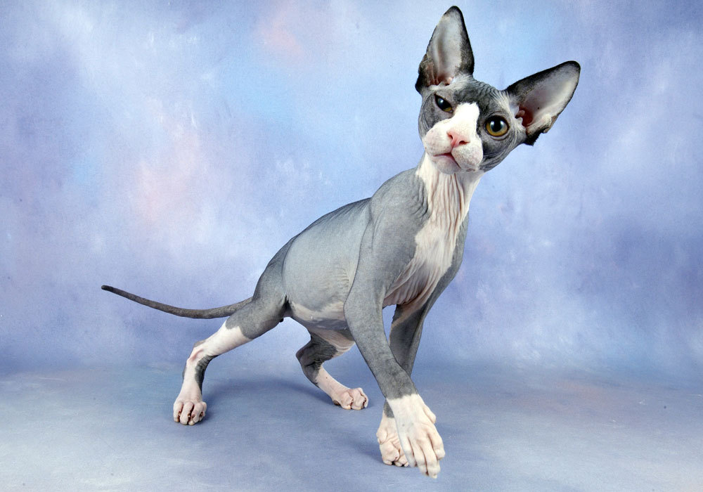

Введение
Мода на породы кошек изменчива. Но меняется она не так часто, как мода, скажем, на одежду или дизайн интерьеров. В кошачьем мире, если уж порода стала востребованной, она продержится на Олимпе куда больше года: какая-то — 5 лет, какая-то — 10 лет, какая-то — 20, а какая-то — и все 30 лет. Здесь представлен ТОП-10 пород кошек 2022-2023 года, которые сейчас больше всего интересны жителям стран Восточной Европы. Наш ТОП пород кошек основан на статистике запросов в поисковых системах «Яндекс» и «Гугл» в среднем за месяц.
10 место: абиссинская кошка
110 тысяч запросов достаются абиссинским кошкам. Они общительны, темпераментны, изящны и красивы. Это, кстати, по основной версии происхождения, одна из самых древних пород в мире, известная еще со времен Древнего Египта. Но сейчас порода переживает второе дыхание (впрочем, может быть, уже даже не второе, а куда большее по счету).
9 место: бурма
Бурманская порода набирает 120 тысяч запросов от фанов в месяц. Это не так-то и мало, учитывая, что на постсоветском пространстве она известна обывателям куда меньше сиамской или шотландской. Кошечки эти симпатичны, как пантеры, и привязчивы. Так что ценители нашлись и, возможно, их количество в скором времени увеличится.
8 место: сибирская кошка
Еще 125 тысяч запросов в месяц достается сибирским котам, которые не выходят из моды уже много лет подряд. Это объяснятся тем, что, во-первых, порода хорошо известна и давно распространена на остсоветском пространстве. Во-вторых, она хорошо адаптирована к нашим климатическим условиям и, в-третьих, имеет шикарную внешность.
7 место: сиамская кошка
Как ни странно, но порода, которая переживала пик популярности много лет назад, все еще держится на седьмом месте рейтинга и, похоже, не собирается подвигаться. Около 160 тысяч запросов в месяц набирают сиамы. Порода любима многими в силу ласкового характера и очень элегантной внешности.
6 место: ориенталы
Еще 186 тысяч раз ищут ориентальную породу кошек. Ее популярность — в активности, темпераментности и очень оригинальном внешнем виде. Порода подходит для не ленивых хозяев, готовых развлекать питомца.
5 место: сфинкс

Сфинксов и все, что с ними связано, в месяц ищут 200 тысяч раз. Мода на сфинксов уже не нова, но они оборотов пока не сбавляют. Эти кошки имеют очень приятный, ручной характер, любят посидеть на руках у хозяев и олицетворяют респектабельность владельца, ведь стоят они не дешево. Наверное, в этих чертах и кроется секрет их популярности.
4 место: бенгальская кошка
Сравнительно молодая порода, набравшая 285 тысяч запросов в месяц, то есть почти вполовину меньше, чем британцы. Мода на эту породу гудит уже несколько лет и пока ее популярность растет. Тем не менее, мы не прогнозируем для этой породы места выше четвертого в силу ряда причин. Бенгалы нравятся людям из-за дикой внешности с розетками леопарда. Да, это очень красиво. Но все-таки бенгалы — это гибридная порода с дикой кошкой, которые получили от нее нрав и активность. Соответственно, порода нуждается в большом пространстве дома: хотя бы 100-150 метров квартира или дом с выходом на улицу. В таких условиях бенгал будет чувствовать себя отлично. А вот попытки запереть такого красавца на маленькой площади заканчиваются плохо: коту тесно и скучно, он начинает развлекать себя, как может, что приводит к недовольству хозяев.
3 место: британская кошка

Британская порода кошек очень старая и популярна с давних пор. Это одна из старейших пород. ак видите, она оборотов почти не сбавила и сегодня имеет около 500 тысяч запросов от поклонников в месяц, что достаточно много, учитывая ее возраст. Британцы, как нам кажется, популярны в силу своего неплохого здоровья, спокойного характера и внешнего вида а-ля медвежонок (тяжелый костяк, крупные и отличаются плюшевой шерстью).
2 место: мейн-кун
Порода мейн-кун вошла в моду на постсоветском пространстве сравнительно недавно и уже набирает около 680 тысяч запросов в месяц. Сейчас популярность породы идет по нарастающей и через время она может сравняться с шотландцами. Мейн-куны популярны в силу своего импозантного внешнего вида. Это очень большие коты (до 12-14 кг) с кисточками на ушах, имеющие дружелюбный, флегматичный, можно даже сказать, величественный характер.
1 место: шотландская кошка
Почти 790 тысяч запросов от поклонников в месяц получает шотландская порода кошек. Эта порода уже более 10 лет держит пальму первенства, хоть и потихоньку сдает позиции. Популярность шотландских кошек объяснить легко: они милые, со сложенными ушками (разновидность фолд), а еще шотландцы имеют неплохие характеры и смешные повадки. Все это делает их самыми любимыми на просторах СНГ.